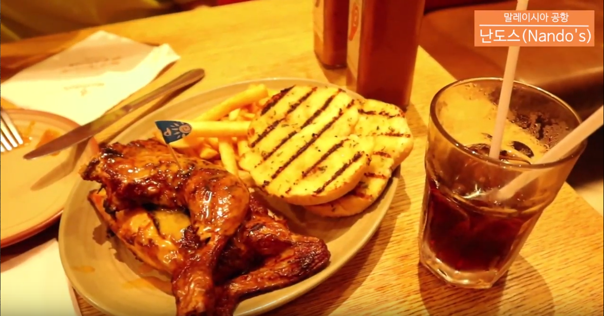

PLANS
Kuala Lumpur, Malaysia
반나절 알차게 돌아보는 쿠알라룸프르시내(daytime)
half day- PLAN
- 쿠알라룸프르 아침,오전에 경유하며 짧은 시간을 알차게 즐길 수 있는 반나절여행
-
타입
solo couple family friends
-
예상경비
$
-
난이도
normal
- 위치 easy
- 교통 easy
- 소통 normal
- 체력 hard
-
1
Nando's KLIA 2
쿠알라룸푸르에서 치킨요리가 유명한 맛집
29.90 MYR+말레이시아에서 가장 인기있는 닭요리 전문점
 40min
*KLIA ekspres
40min
*KLIA ekspres카운터운영시간_5:45~23:30
운행시간_5:00~1:00
28분간격운행*KL센트럴역환승
5호선
Stesen Sentral Kuala Lumpur
→2→ Masjid Jamekhttp://www.kliaekspres.com/
KLIA ekspres 왕복100 MYR+
지하철2.40MYR -
2
메르데카광장
독립선언문 선포장소
영국 국기를 철거하고 말레이시아 국기가 게양된 역사적인 장소
30min
5호선Stesen Sentral Kuala Lumpur
→3→ KLCC2.40 MYR
-
3
KLCC공원
도심 속 공원
쇼핑몰과 랜드마크, 공원을 한번에 즐기며 여유롭게 휴식할 수 있는 장소
 1min
1min
-
4
페트로나스트윈타워
88층 이슬람식 건축물
80 MYR+쿠알라룸프르 시내를 내려다 볼 수 있는 최고의 전망대
25min
무료버스 (GOKL, GREEN)KL94 KLCC (Utara) →7→
KL86 MRT Bukit Bintang/HSBC -
5
올드타운화이트커피
카야토스트가 유명한 카페
카야토스트와 커피, 배가 고프다면 말레이시아전통음식까지 즐길 수 있는 카페
25min
-
6
잘란알로야시장
쿠알라룸푸르에서 가장 유명한 야시장
쿠알라룸르프야시장으로 기념품, 다양한 길거리음식, 크랩먹방을 할 수 있는 야시장
오디오 가이드: